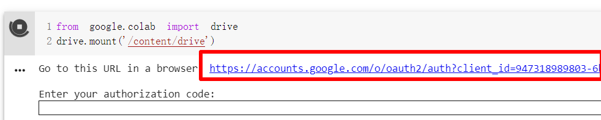
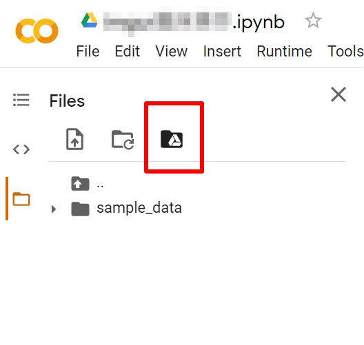
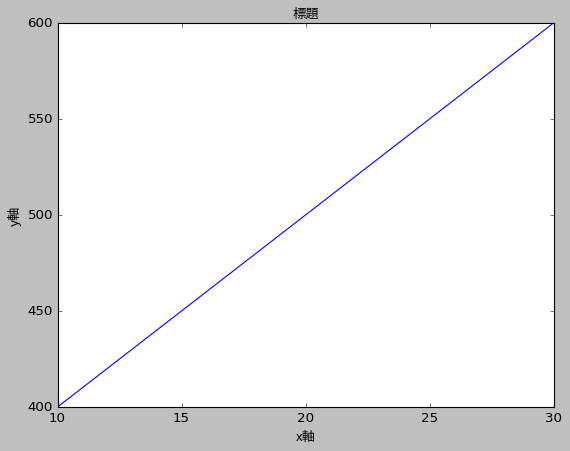
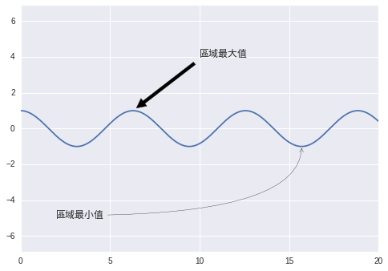
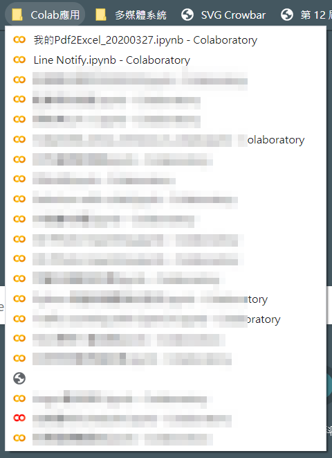

Colab 2
https://ithelp.ithome.com.tw/m/articles/10234373
延續 Day 10 的 Colab 介紹文，本篇分享自己踩過的坑與填坑，並期待 Colab 真正能成為您程式開發的助力。
方法1. 先來懶人包
- 以下為執行碼複製貼上，將
os.chdir()改您的Google雲端硬碟資料夾位址即可)
#Colab資料夾設定方法
#!pip install google.colab #如未安裝取消註解後執行
import os
from google.colab import drive
drive.mount('/content/drive')
##出現提示欄進行授權
os.chdir('/content/drive/My Drive/{你的google雲端硬碟資料夾位址}') #切換該目錄
os.listdir() #確認目錄內容
拆解說明
-
當你開啟 Colab 互動環境，其實是開啟了一個虛擬機，你可以透過與雲端硬碟連結。在 Colab 左側程式碼的提示為下方兩行，執行後授權Colab與你的google雲端硬碟帳戶連結。
from google.colab import drive drive.mount('/content/drive')
過程中會出現等待您的授權碼，請點選連結，複製授權碼貼回 Colab 等待的對話框即可。

{kind=link}
-
進一步讓 Colab 能存取你指定的 Google 雲端硬碟路徑，你需要執行以下程式碼，讓
os模組切換至您的 Google 雲端硬碟資料夾位址:import os os.chdir('/content/drive/My Drive/{Google雲端硬碟資料夾位址}')
-
要確定是否順利切換到指定目錄，可以用
os.listdir()檢查目錄之下檔案是否如預期，如果看到自己的資料夾目錄代表成功。os.listdir() #確認目錄內容
注意事項:如果 Colab 要從外部下載安裝第三方套件(如Talib)，記得先安裝好Talib再切換到自己的雲端硬碟目錄，不然執行時可能會有錯誤狀況，發生錯誤也別緊張，重啟服務即可。
方法2. 直接點圖示完成連線 (NEW!)
- 因為 Google Colab 為雲端服務持續更新，介面更新也不會特別更您說，目前的最新狀態是: 側邊欄的 Google 雲端硬碟圖示點下去，確認您授權操作Google 雲端硬碟，就大功告成了!

{kind=link}
超前填坑? Colab 繪圖如何正常顯示繁體中文?
懶人包
# Colab 進行matplotlib繪圖時顯示繁體中文
# 下載台北思源黑體並命名taipei_sans_tc_beta.ttf，移至指定路徑
!wget -O taipei_sans_tc_beta.ttf https://drive.google.com/uc?id=1eGAsTN1HBpJAkeVM57_C7ccp7hbgSz3_&export=download
!mv taipei_sans_tc_beta.ttf /usr/local/lib/python3.7/dist-packages/matplotlib//mpl-data/fonts/ttf
from matplotlib.font_manager import FontProperties
import matplotlib.pyplot as plt
# 自定義字體變數
myfont = FontProperties(fname=r'/usr/local/lib/python3.7/dist-packages/matplotlib/mpl-data/fonts/ttf/taipei_sans_tc_beta.ttf')
# !!!!後續在相關函式中增加fontproperties=myfont屬性即可!!!!
拆解說明
Python 的 matplotlib 是常用的數據分析/資料視覺化模組，因 matplotlib 預設字體不支援中文，中文顯示會出現一堆口口，繪圖要顯示中文需要修改相關設定，經過一番苦心找到解法，並且使用開源且可商用的「台北黑體」(感謝 翰字鑄造JT Foundry開源如此美觀大方的字體）。
- 下載指定字體置於 Colab 指定位置 2. 以
!wget下載字體 3. 存置 Colab 路徑：/usr/local/lib/python3.6/dist-packages/matplotlib/mpl-data/fonts/ttf
- 各種文字輸出的函數加入
fontproperties屬性，如:plt.title("自訂標題",fontproperties=myfont) plt.ylabel("自訂y軸",fontproperties=myfont) plt.xlabel("自訂x軸",fontproperties=myfont) ax.annotate('註解說明',fontproperties=myfont) ax.set_title('自訂標題',fontproperties=myfont) ax.set_xlabel('自訂x軸',fontproperties=myfont) ax.set_ylabel('自訂y軸',fontproperties=myfont) 複製以下cell並執行即可
- 這邊貼上本文 Colab 範例執行 matplotlib 繪圖的中文顯示成果: 中文可以正常顯示囉。
 
{kind=link}
{kind=link}
最後，用 Colab 建立自己的軍火庫吧!
- Colab 可以雲端建立
.ipynb的筆記本檔案，而且他是個具有專屬 URL 的服務，你可以做到以下事情:- 透過權限設定分享 Colab 的 URL ，就跟 Google 雲端硬碟檔案分享方式一樣。
- 把寫好的 Python 小程式加入你的 Chrome 瀏覽器我的最愛，跨裝置都可以開啟變成行動軍火庫!

{kind=link}
小結
- 透過 Colab 雲端環境、是個 linux 虛擬機的特性，就可以幫助程式開發且不怕弄髒環境，髒了再開就好。
- 連結硬碟我們多了一個
os.listdir()指令確認資料夾已經能順利讀取， matplotlib 要更改環境變數才能繪圖顯示中文，本文的方法也試圖克服了 Colab 顯示結果。
- 本系列文主要功能會透過 Python 將 LINE 聊天機器人功能以 Flask 佈署在 Heroku 伺服器，聽起來就會有不少環節需要注意，故後續為 LINE ChatBOT 新增的功能，會先以 Colab 實作與介紹，再轉移到 Heroku 佈署，謝謝您的堅持，我們下篇見!
參考
責任更新!
因Colab所使用的Python版本迄今(2021/4/4)已更新為3.7版(原文章為3.6版)，請使用指令時確認版本狀況，懶人包修正如下，後續如有類似情形即可自行排除，謝謝:
# Colab 進行matplotlib繪圖時顯示繁體中文
# 下載台北思源黑體並命名taipei_sans_tc_beta.ttf，移至指定路徑
!wget -O taipei_sans_tc_beta.ttf https://drive.google.com/uc?id=1eGAsTN1HBpJAkeVM57_C7ccp7hbgSz3_&export=download
!mv taipei_sans_tc_beta.ttf /usr/local/lib/python3.7/dist-packages/matplotlib//mpl-data/fonts/ttf
from matplotlib.font_manager import FontProperties
import matplotlib.pyplot as plt
# 自定義字體變數
myfont = FontProperties(fname=r'/usr/local/lib/python3.7/dist-packages/matplotlib/mpl-data/fonts/ttf/taipei_sans_tc_beta.ttf')
# !!!!後續在相關函式中增加fontproperties=myfont屬性即可!!!!